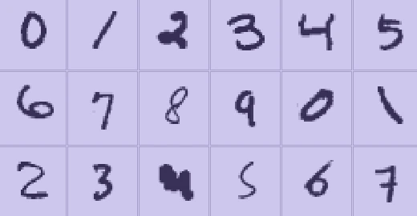
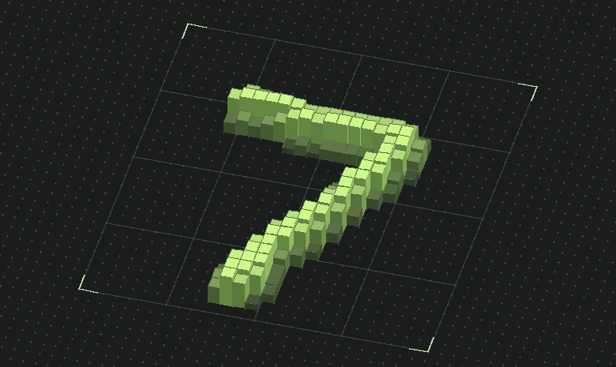

Class 01 / Foundations
Image classification
Can a computer recognize a handwritten digit by finding others that look like it? Compare pixels, inspect the nearest neighbors, and test where the classifier breaks.
Computer vision portfolio
Explore how computers read images by experimenting with real pixels, comparing predictions, and looking closely at the mistakes.
Explore the classes
Course library

Class 01 / Foundations
Can a computer recognize a handwritten digit by finding others that look like it? Compare pixels, inspect the nearest neighbors, and test where the classifier breaks.
Portfolio projects
Train a small neural network and watch its decision boundary change.